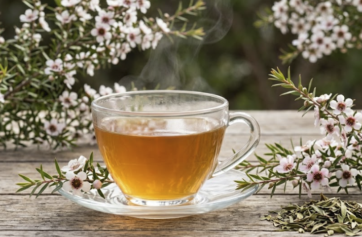

Mānuka
Tea


Mānuka (also known as “tea tree”) is valued for its anti-inflammatory properties that help soothe the body, as well as its ability to aid digestion and overall gut health.
Mānuka contains natural compounds with strong anti-inflammatory properties that help soothe irritation and support healing.